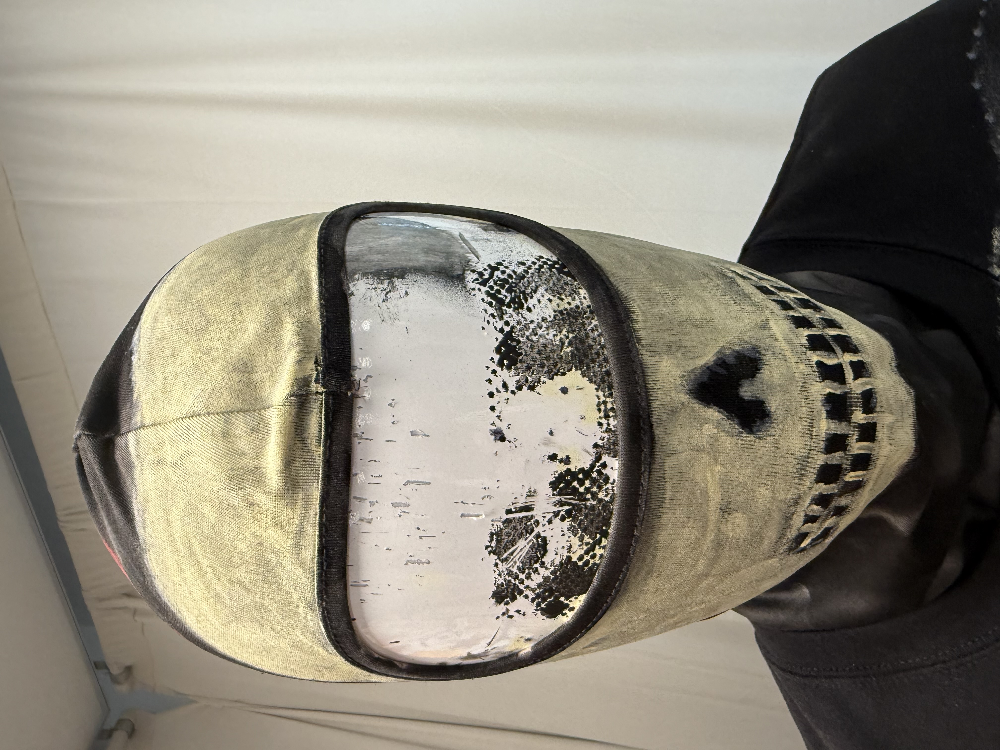

Balaclava Piece
The Black Skull Balaclava is a cold-weather accessory designed around mystery, protection, and identity. It uses a dark base with skull-inspired markings to create a bold face covering.
The skull design turns the balaclava from a simple winter item into a statement piece. It covers the face while still creating a strong visual identity.
This piece connects to the bone theme through skull imagery. It also connects to fall and colder weather because the balaclava is practical and protective.
The black balaclava gives the collection its most mysterious look. It feels dark, urban, and aggressive while still matching the rest of the bone-inspired pieces.
← Back to Collection